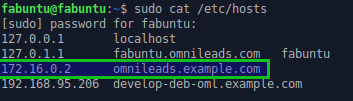
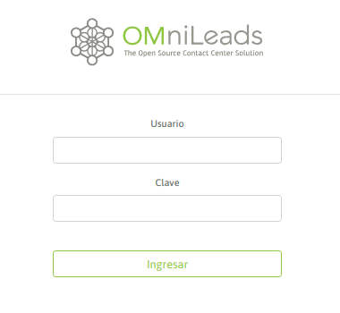

Primer acceso a OMniLeads:¶
Para acceder al sistema OMniLeads debe ingresar a:
Nota: El acceso web a OMniLeads debe ser a través del hostname.domain del host. Por lo tanto existen dos posibilidades a la hora de resolver el hostname:
1 - Que los DNS de la red lo hagan. 2 - Añadir el hostname.domain del host, dentro del archivo de hosts (Windows, Linux o Mac de cada PC que tenga que acceder a OMniLeads.
Figure 1: hosts file
Al encontrarnos con la pantalla de login, simplemente se debe ingresar el usuario admin y la clave generada durante la instalación (my_inventory), como se expone en las figura 10.
Figure 2: First login
En caso de no recordar la contraseña de admin, recuerde que quedó la copia del archivo inventory en el archivo my_inventory ubicado en el mismo directorio donde se encuentra la raíz del proyecto ominicontacto. Allí entre otras cosas, cuenta con la contraseña generada para el usuario admin.